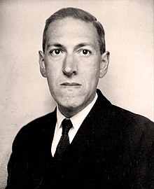

Howard Phillips Lovecraft (1890-1937) fue un escritor estadounidense de terror y ficción cósmica, conocido principalmente por ser el creador del género literario conocido como "horror cósmico". Nació en Providence, Rhode Island. Lovecraft desarrolló un enfoque único y distintivo en la literatura de terror que se centra en lo desconocido, lo insondable y lo cósmico.
Aunque durante su vida no alcanzó gran reconocimiento, Lovecraft ha ganado una inmensa popularidad y aclamación póstuma. Sus obras más conocidas incluyen historias como "The Call of Cthulhu", "At the Mountains of Madness" y "The Shadow over Innsmouth". Lovecraft creó un universo ficticio compartido conocido como el "Mitos de Cthulhu", que incluye dioses antiguos y seres cósmicos que desafían la comprensión humana.
"The Call of Cthulhu" es un relato corto escrito por H.P. Lovecraft, publicado por primera vez en 1928 en la revista "Weird Tales". La historia es narrada a través de una serie de documentos escritos por diferentes personajes, y sigue la investigación de un hombre llamado Francis Wayland Thurston sobre fenómenos extraños y cultos oscuros.
Más info aquí Descargar Libro